Zone de vizitat
este situat in imediata vecinătate a Muzeului de Istorie Naționala si Arheologie și a fost descoperit in anul 1959, in timpul unor lucrări edilitare desfășurate in Piața Ovidiu. Cercetările ulterioare descoperirii atestă că monumentul a fost construit in secolul al IV-lea si extins treptat până in jurul secolului al VI-lea, atunci când a incetat să mai funcționeze. In vremurile sale de glorie edificiul reprezenta cea mai mare construcție de acest gen din întregul Imperiu Roman și servea ca punct de legătură intre port și orașul antic, fiind locul în care se desfășurau activitățile de comerț și depozitare a mărfurilor.
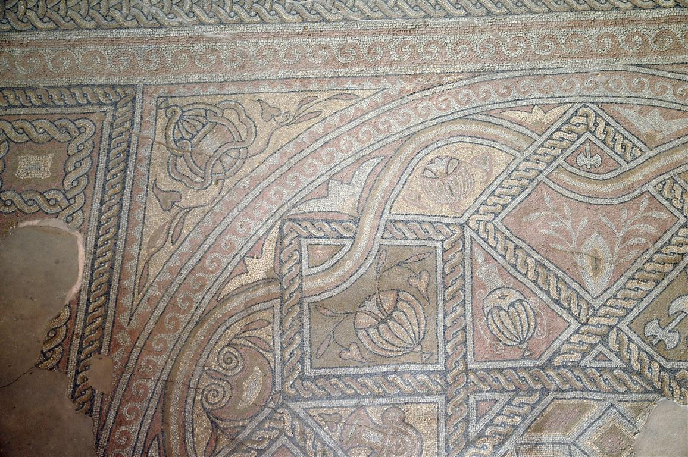a fost înființat în anul 1878 prin grija primului prefect al administrației românești în Dobrogea: Remus Opreanu și a inspectorului școlar Ion Bănescu. Este unul dintre cele mai bogate muzee din țară. În acesta, sunt expuse piese neolitice din culturile Hamangia și Gumelnița, unelte agricole din perioada sclavagistă, sarcofage datate ca aparținând secolelor I - III, amfore greco-romane, statuete reprezentând zeități grecești și opere de artă. Șarpele Glykon lucrat în marmură albă și colecția de monede gravate cu regii sciți sunt cele mai renumite. Clădirea muzeului a fost construită în 1879 și refăcută de Vasile Pârvan în 1911, fiind în prezent monument istoric. Cea mai importantă piesă din colecția Muzeului de Istorie Națională și Arheologie Constanța este șarpele Glykon, statuie unică în lume, descoperită întâmplător la 1 aprilie 1962.
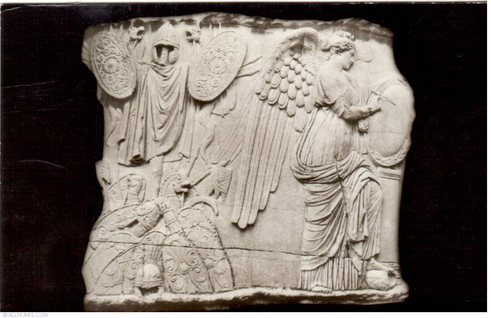din cadrul Complexului Muzeal de Științe ale Naturii este un loc unic in Constanța. Inaugurată in anul 1985, Microrezervația se întinde pe o suprafață de cca 6 ha din care 2 ha reprezintă luciu de apă cu vegetație specifică. Acest obiectiv a fost creat din ideea de a oferi vizitatorilor o imagine cât mai completă asupra naturii dobrogene. Patrimoniul muzeului cuprinde avifauna acvatică (pelicani, lebede, rațe și gâște sălbatice), avifauna terestră (păuni si fazani) si mamifere (mufloni, cerbi lopătari și căprioare), care se regăsesc in Rezervația Biosferei Delta Dunării si Rezervația Negureni. Mare parte din aceste exemplare sunt monumente ale naturii și specii rare cu o reprezentare tot mai redusă in stare liberă.
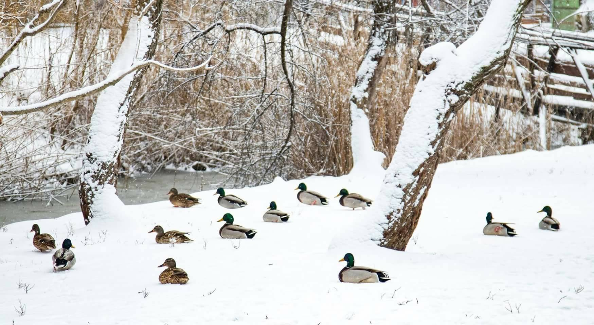amplasata in Piața Ovidiu, este principalul edificiu de cult musulman din țara și totodată unul dintre cele mai frumoase monumente arhitectonice de pe meleagurile noastre. Lucrările de ridicare a clădirii au inceput în 1910, la inițiativa regelui Carol I (motiv pentru care edificiul îi poartă numele) și au fost incheiate în anul 1913. Inaugurarea a avut loc pe data de 31 mai in prezența familiei regale și a reprezentanților cultului musulman în Romania. Proiectul moscheei a fost realizat de către Victor Ștefanescu, unul dintre arhitecții de rang ai începutului de secol XX, iar construcția a fost ridicată de Gogu Constantinescu. Împărtășind un frumos și unic amestec de elemente arhitecturale egipteano-bizantine și românești, Moscheea Carol I este prima clădire din țara noastră pentru a cărei construcții a fost folosit betonul armat. Un element distinctiv al edificiului este imensa cupolă, construită din inovatorul material menționat mai sus. Deși specifică multor lăcașe de cult musulman, cupola este un element arhitectural de inspirație creștină, mai exact, bizantină.
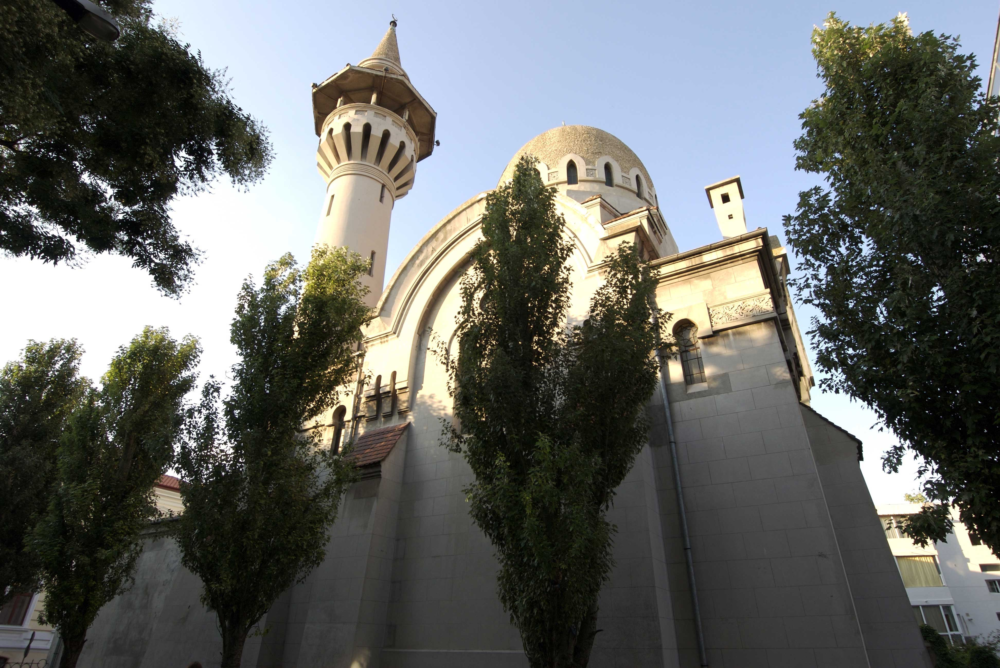a fost înființat prin Hotărârea Consiliului de Miniștri din 29 mai 1969, ca instituție de profil de importanță republicană/națională - muzeu de categoria I, prin specificul său, unicat în țară, în prezent constituind rețeaua muzeală militară, împreună cu Muzeul Militar Național "Regele Ferdinand I" și Muzeul Aviației. Instituția îndeplinește cumulativ următoarele funcții: constituirea, conservarea și restaurarea patrimoniului muzeal; evidența, protejarea, cercetarea și dezvoltarea patrimoniului muzeal; punerea în valoare a patrimoniului muzeal în scopul cunoașterii, educării și recreerii publicului; promovarea trecutului navigației și a istoriei Marinei Române de la începuturi și până în contemporaneitate. Ca unitate militară, Muzeul Marinei Române este instituția specializată a Statului Major al Forțelor Navale în probleme de cultură, cercetare și documentare muzeografică și istorico-militară. Prin toate acestea, instituția păstrează memoria înaintașilor pentru generațiile viitoare, înscriindu-le efortul, strădania și reușitele în patrimoniul universal.
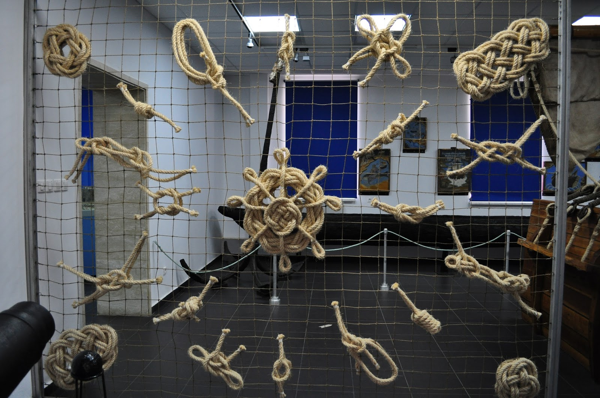înfiinţat în anul 1961 cu un patrimoniu modest, aparţinând vechilor pinacoteci din Constanţa şi Balcic (deschise în anii 1935 – respectiv 1937), Muzeul de Artă oferă publicului de pretutindeni peste un secol din evoluţia picturii, sculpturii şi graficii româneşti (circa 1840 – 1950), încercând în acelaşi timp să arate şi să fixeze prin opere de referinţă, locul şi rolul Dobrogei, al peisajului de inspiraţie marină în contextul creaţiei naţionale. Expoziţia de bază a muzeului constănţean este structurată pe nuclee monografice/ săli ale maeştrilor şi sugerează o imagine complexă a creaţiei fiecăruia, dar şi a direcţiilor de evoluţie din perioada modernă a artei româneşti.
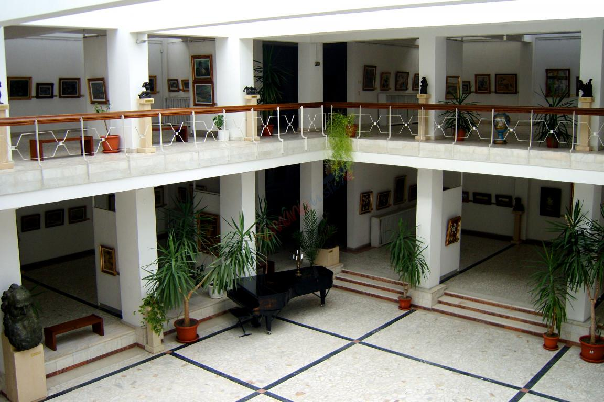face parte din Complexul Muzeal de Știinte ale Naturii, el vă invită intr-o călătorie de inițiere în tainele ascunse ale boltei cerești. Ca intr-o fereastră deschisă către cer vi se vor prezenta stele, planete, meteori, galaxii și alte corpuri cerești care veghează omenirea de mii de ani. Planetariul a luat ființă in 1969, anul in care omul a pășit pentru prima dată pe Luna. Amplasat la intersecția bulevardului Mamaia cu strada Soveja, aproape de intrarea sudică în stațiunea Mamaia, destăinuie și astăzi misterele greu de pătruns ale cerului. Planetariul dispune de o cupolă al cărei diametru are 8 metri și o capacitate de 80 de locuri, loc in care se realizează demonstrații. În cadrul acestor demonstrații vizitatorii pot urmari proiectia unui cer instelat pe o boltă artificială. La intrare în Observator, se poate vizita o expoziție care prezintă structura Universului, pornind de la metagalaxie pana la structura Sistemului Solar, prezentând planetele în imagini, alături de caracteristicile lor. Tot în cadrul Observatorului Astronomic se află cupola pentru observații astronomice. Aceasta are un diamentru de 5 metri și adăpostește un Telescop cu oglindă tip Cassegrain.
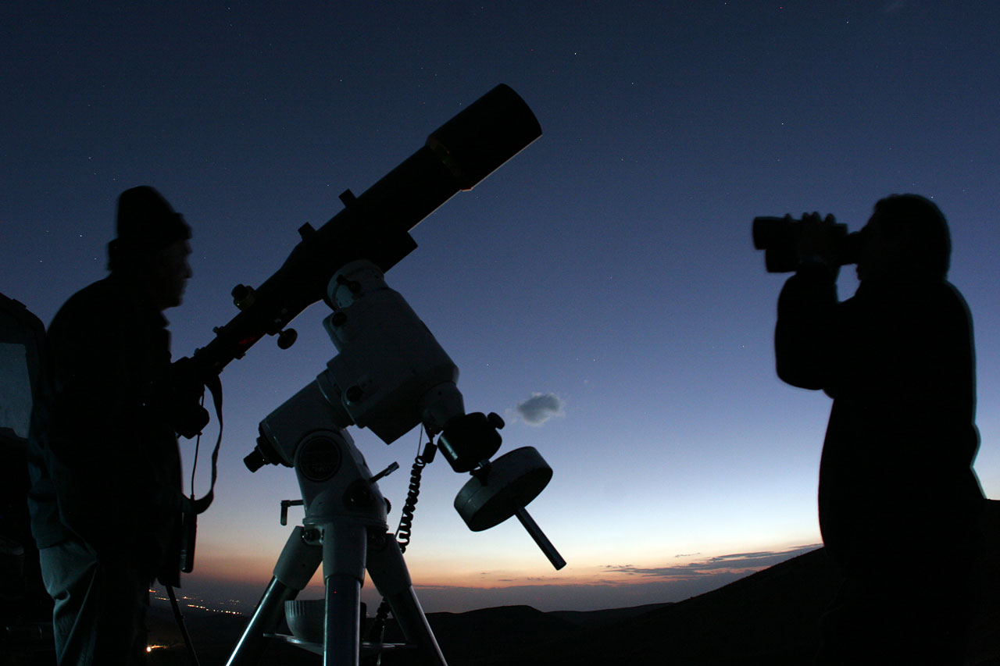aflate în custodia RNP Direcţia Silvică Constanţa, se întind pe o suprafaţă de 285 de hectare, speciile de fosile care se găsesc în pereţii calcaroşi fiind unice în ţară şi perfect conservate. Formaţiunile muntoase din zonă sunt foste recifuri coraliere ale Mării Thetis.Rezervaţia este formată din calcare din perioada jurasicului, aici găsindu-se o faună şi o floră de interes deosebit. Calcarele cheilor reprezintă rămăşiţe de atoli, ceea ce justifică forma semirotundă a pereţilor. Pereţii sunt orientaţi est/vest şi nu au o înălţime mai mare de 40m. Platourile calcaroase cu forme ciudate, bătute de trecerea apei, care mărginesc de o parte şi de alta şoseaua. Alături de frumuseţile naturale, zona este presărată şi cu numeroase urme arheologice, în special cele găsite în peşterile presărate de-a lungul Cheilor Dobrogei - resturi de unelte, vânat şi chiar urme osteologice ale tipului de oameni care populau această zonă în epoca preistorică.
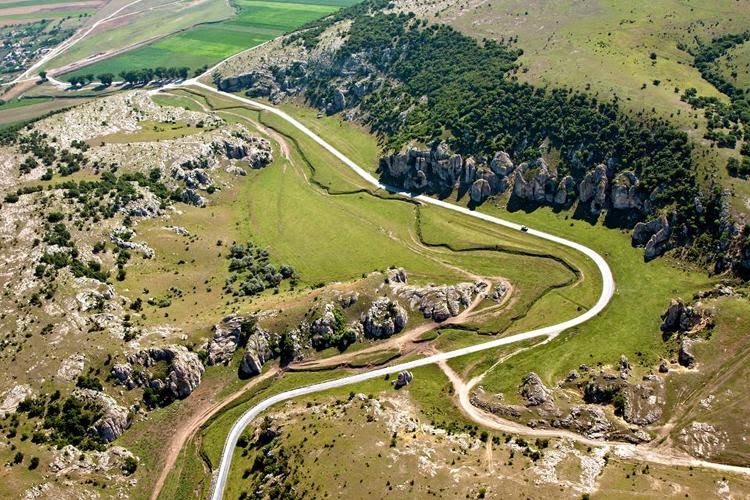a fost intemeiată in anul 657 i.Hr. pe malul lacului Sinoe de către coloniștii greci din Milet (Asia Mica), ca port la Marea Neagră. A fost prima colonie greacă din vestul Mării Negre. Grecii îi spuneau Dunarii Istros – și de aici, cetatea a primit numele de Istria. Timp de vreo 1300 de ani, cetatea s-a bucurat de o continuă dezvoltare – era structurată în două părți distincte (acropola și așezarea civilă), la fel ca multe alte orașe antice grecești, structura care s-a păstrat până in secolul VII d.Hr., când orașul a fost abandonat din cauza colmatării vechiului golf al Mării Negre (laguna Razelm-Sinoe de astăzi). Tot în perioada sa de glorie au apărut și primele monede de pe teritoriul României (între anii 480-475 i.Hr.), iar numărul locuitorilor Histriei ajunsese la aproape 25.000.Mai aproape de zilele noastre, în 1868, cetatea a fost identificată de arheologul francez Ernest Desjardins, dar cercetările propriu-zise au început în 1914, la inițiativa lui Vasile Pârvan – cel care avea să o considere, pe buna dreptate, Pompeiul românesc. Interesant este că și în ziua de azi, arheologii tot mai descoperă câte un artefact în acel sit.

situat lângă satul Adamclisi, la 60 de km de Constanța, monumentul are o origine controversată, unii datându-l dinainte de era noastră , alții plasându-l în sec IV, în timpul domniei împăratului Constantin. Din cercetările recente s-a ajuns la concluzia ca monumentul a fost construit în jurul anului 109, cam în aceeași perioadă cu Columna lui Traian din Forumul de la Roma. Razboaiele daco-romane și victoria lui Traian urmată de cucerirea Daciei a fost considerată ca fiind cea mai importantă bătălie și a fost sarbatorită cu mare fast la Roma. În urma acestui război, Imperiul Roman a ajuns la apogeul puterii sale, fiind singurul razboi în urma căruia s-au construit toate monumentele mărețe: Columna lui Traian din Forumul de la Roma și Tropaeum Traiani de la Adamclisi.
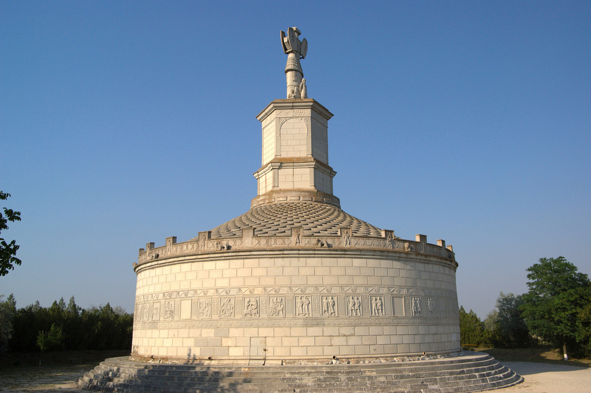sunt protejate pentru a da o șansă de supraviețuire unei infinitezimale frânturi a biodiversității acestui tip de peisaj. Aceste dune sunt constituite din acumularea nisipului adus de vânt dinspre golful marin care se afla la nord de actuala rezervație. Zona are o altitudine de 12-14 m, fiind situată la cca 200-300 m de actuala linie a țărmului mării; substratul este constituit din nisipuri și soluri nisipoase. Temperatura medie anuală a zonei este de 11,2 grade C, dar vara nisipul poate ajunge și la 42 grade; precipitațiile medii anuale sunt la 378 mm.Până acum sunt cunoscute de aici 416 specii de nevertebrate (dintre care 348 specii de insecte), 3 specii de amfibieni, 6 specii de reptile, 54 specii de păsări, 15 specii de mamifere. Dintre reptile, de menționat este prezența țestoasei dobrogene , dar este prezent și șarpele rău, gușterul , șopârla de iarbă și probabil și vipera de stepă.
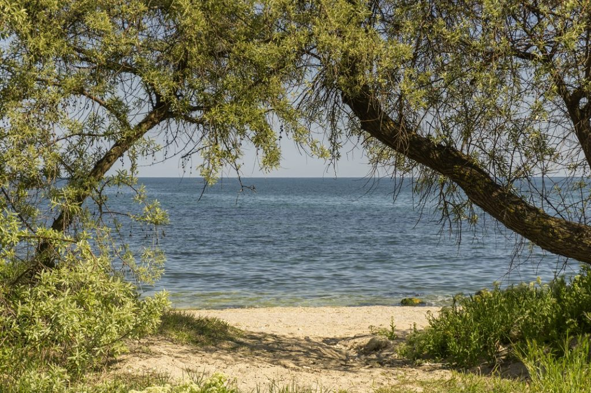din Lacul Siutghiol este unul dintre locurile care exercită o adevărată atracție asupra turiștilor care sosesc în stațiunea Mamaia. De-a lungul timpului, micul petic de pământ a stârnit curiozitatea și imaginația oamenilor, care au țesut în jurul său o serie de legende. Una dintre aceste poveștiri are legatură cu originea numelui pe care îl poartă insula. Se spune că, în timpul exilului său, poetul Ovidius Publius Naso se retrăgea pe acest petic de pământ pentru a-și scrie versurile, astfel insula a fost botezată cu numele său. În realitate, specialiștii nu au găsit nicio dovadă care să ateste prezența poetului Ovidius pe această mică insulă din lacul Siutghiol. Cu toate acestea, legenda a rămas în picioare până în zilele noastre și mai există înca oameni care cred cu tărie în veridicitatea ei. În secolele trecute insula era populată de pescari care iși construiau aici adăposturi, dar și de grădinari care profitau de solul fertil al insulei. Odată cu identificarea potențialului său turistic, Insula lui Ovidius a fost transformată într-un loc de relaxare pentru turiști, păstrandu-și această intrebuințare și astăzi.Pentru a ajunge pe insulița bogată în vegetație aveți la dispoziție un vaporaș care pleacă din zona Cazino, la intervale regulate de timp. Până să ajungeți pe insulă vă asteaptă o plimbare liniștită pe lac. Pe Insula lui Ovidiu este amenajat un frumos complex turistic, iar cei care doresc au posibilitatea să rămână aici câteva zile. Restaurantul rustic al complexului servește în principal preparate din pește, iar în fiecare seară o formație de muzică întreține atmosfera.
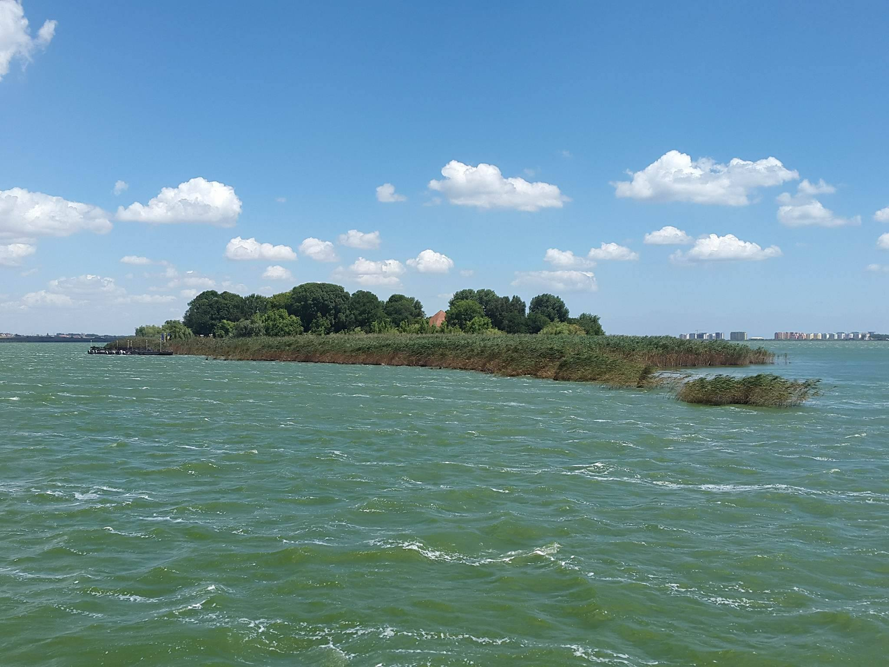